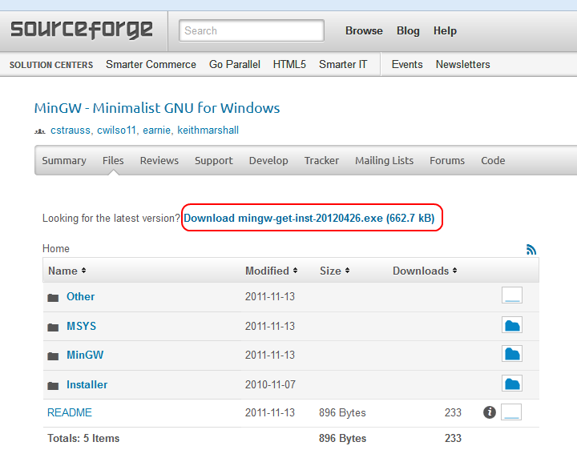
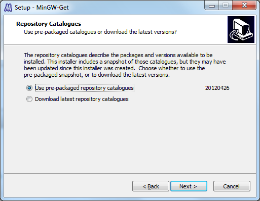
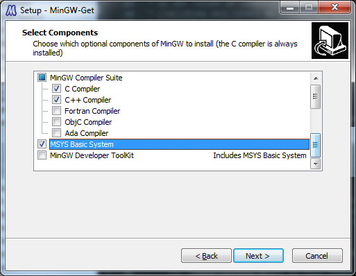
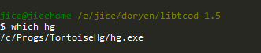

17.1. On Windows with Mingw
Mingw installation
Download the latest version of Mingw from this adress :
http://sourceforge.net/projects/mingw/files/
The latest installer should be at the top of the page with a name starting with mingw-get-inst..

Download and run the program. Follow the installation steps. Be sure to check the "Use pre-packaged repository" option :

The latest version might be less stable and might not work with a precompiled libtcod.
When you arrive at the component selection screen, check C compiler, C++ compiler and MSys system :

Keep on following the installation steps until the installation is finished. Now you have a "Mingw Shell" program in your start menu. This is the terminal you will use to compile and debug your game.
TortoiseHg installation
In order to get the latest version of libtcod, you need a mercurial client.
Go to the download page and grab the client corresponding to your version of Windows :
http://tortoisehg.bitbucket.org/download/index.html
Follow the installation wizard using the default configuration. Once the installation is finished, restart your computer.
Now you should be able to use mercurial (hg) from the Mingw Shell. To check if everything is ok, start a shell and type "which hg" :

Getting libtcod source code
In Mingw Shell, type :
hg clone https://bitbucket.org/jice/libtcod
This might take some time so grab a beer. Once it's finished, a libtcod directory has been created.
You can check the documentation (the same you're currently reading) in libtcod/doc/index2.html.
The headers are in libtcod/include.
The source code in libtcod/src.
Compiling libtcod
Go in libtcod's main directory :
cd libtcod
And start the compilation :
make -f makefiles/makefile-mingw
The compilation make take a few seconds depending on your CPU speed. Once it's finished, compile the samples :
make -f makefiles/makefile-samples-mingw
Check that everything is ok by running the samples :
./samples_cpp